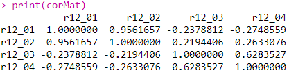
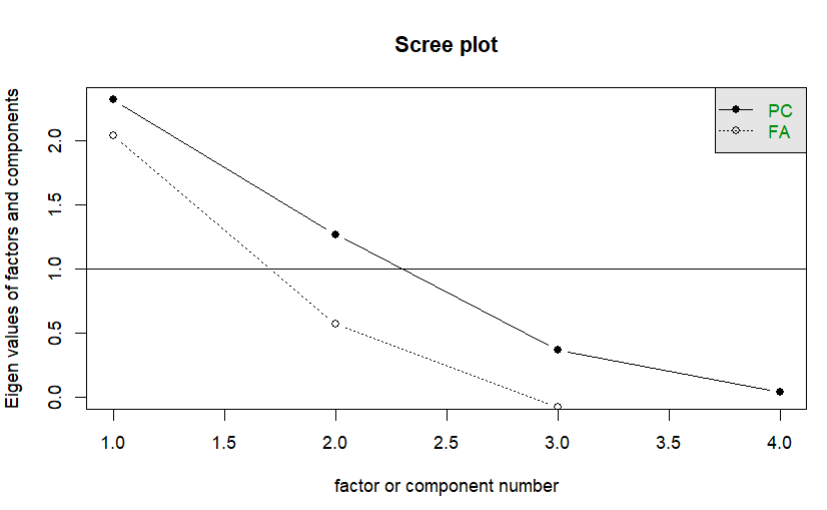
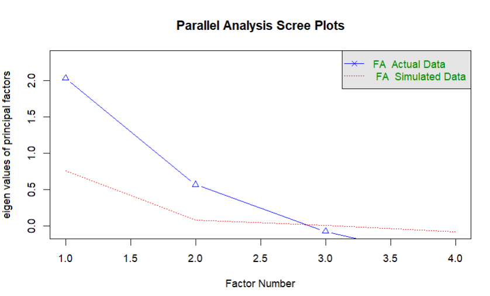

# Paquetes
library(tidyverse)
library(haven)
library(sjlabelled)
library(psych)
library(GPArotation)
library(knitr) # Para tablas bonitas
# Directorio
setwd("C:/Users/cherr/OneDrive/Desktop/Trabajo final estadistica 4")
# Cargar datos
Elsoc <- read_dta("Elsoc_Long_2016_2023.dta")🎯 Objetivos
Realizar AFE con 4 variables de actitudes hacia inmigrantes (ELSOC)
Determinar estructura factorial subyacente
Calcular puntajes factoriales para análisis posteriores
📦 1. Paquetes y datos
🔍 2. Selección y limpieza
# Variables: r12_01 a r12_04 (actitudes hacia inmigrantes)
datos_limpios <- Elsoc %>%
select(r12_01, r12_02, r12_03, r12_04) %>%
filter(
!r12_01 %in% c(-999, -888, -666),
!r12_02 %in% c(-999, -888, -666),
!r12_03 %in% c(-999, -888, -666),
!r12_04 %in% c(-999, -888, -666)
) %>%
drop_na()Muestra de 100 casos
- (para el ejemplo, ya que pueden ser muchos mas)
set.seed(123)
datos_afe <- datos_limpios %>% slice_sample(n = 100)📊 3. Matriz de correlaciones
corMat <- datos_afe %>%
select(r12_01, r12_02, r12_03, r12_04) %>%
cor(use = "complete.obs")
print(corMat)
Figura 1: Matriz de correlaciones
Interpretación:
r12_01 y r12_02: correlación muy alta (+0.95) → mismo constructo
r12_03 y r12_04: correlación alta (+0.63) → mismo constructo
Entre ambos grupos: correlaciones negativas → dos dimensiones opuestas
✅ 4. Pruebas de adecuación
# KMO
kmo <- KMO(corMat)
print(kmo)
# Bartlett
bartlett <- cortest.bartlett(corMat, n = nrow(datos_afe))
print(bartlett)Resultados:
KMO = 0.55 → adecuación aceptable para AFE exploratorio
Bartlett = El test arroja un χ² = 294.97 (gl = 6) con un p-valor < 0.001 → lo que permite rechazar la hipotesis nula de la matriz de correlaciones
📈 5. Número de factores
# Scree plot
scree(datos_afe, factors = TRUE)
Figura 2: Scree plot
# Análisis paralelo
fa.parallel(datos_afe, fa = "fa", n.obs = nrow(datos_afe))
Figura 3: Análisis paralelo de Horn
Conclusión: Ambos métodos indican 2 factores
🔧 6. Extracción de factores
6.1 Ejes principales (PA)
fac_pa <- datos_afe %>%
select(r12_01, r12_02, r12_03, r12_04) %>%
fa(nfactors = 2, fm = "pa", rotate = "none")
print(fac_pa, digits = 2, sort = TRUE)6.2 Máxima verosimilitud (ML)
fac_ml <- datos_afe %>%
select(r12_01, r12_02, r12_03, r12_04) %>%
fa(nfactors = 2, fm = "ml", rotate = "none")
print(fac_ml, digits = 2, sort = TRUE))🔄 7. Rotaciones
7.1 Varimax (ortogonal)
fac_varimax <- datos_Afe %>%
select(r12_01, r12_02, r12_03, r12_04) %>%
fa(nfactors = 2, fm = "ml", rotate = "varimax")
print(fac_varimax, digits = 2, sort = TRUE)7.2 Promax (oblicua)
fac_promax <- datos_afe %>%
select(r12_01, r12_02, r12_03, r12_04) %>%
fa(nfactors = 2, fm = "ml", rotate = "promax")
print(fac_promax, digits = 2, sort = TRUE)
fa.diagram(fac_promax)🧮 9. Puntajes factoriales
fac_final <- datos_Afe %>%
select(r12_01, r12_02, r12_03, r12_04) %>%
fa(nfactors = 2, fm = "ml", rotate = "promax", scores = "regression")
puntajes <- as.data.frame(fac_final$scores)
names(puntajes) <- c("Factor1", "Factor2")
# Unir puntajes a la muestra
muestra_100_completa <- cbind(datos_afe, puntajes)
head(muestra_100_completa)
# Estadísticas descriptivas
summary(puntajes)✅ 11. Conclusiones
Estructura bifactorial clara: Actitud positiva (apertura) vs. negativa (amenaza)
71% de varianza explicada → solución robusta
Puntajes factoriales disponibles para análisis posteriores
Próximos pasos: Regresiones, diferencias por grupo, etc.
Rotación oblicua (Promax) recomendada por correlación entre factores